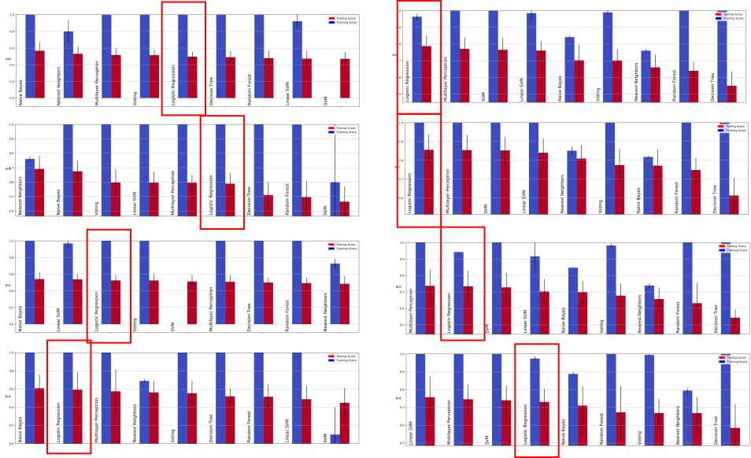
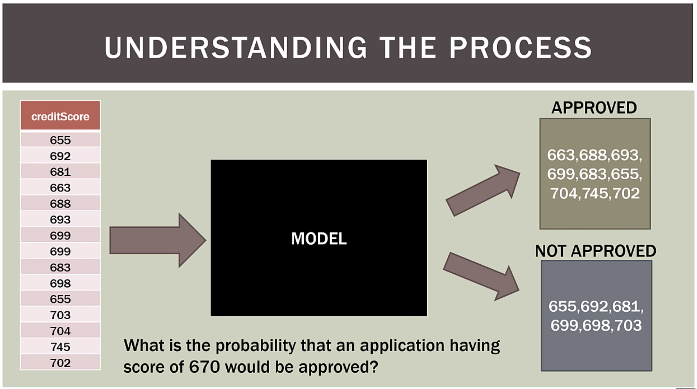
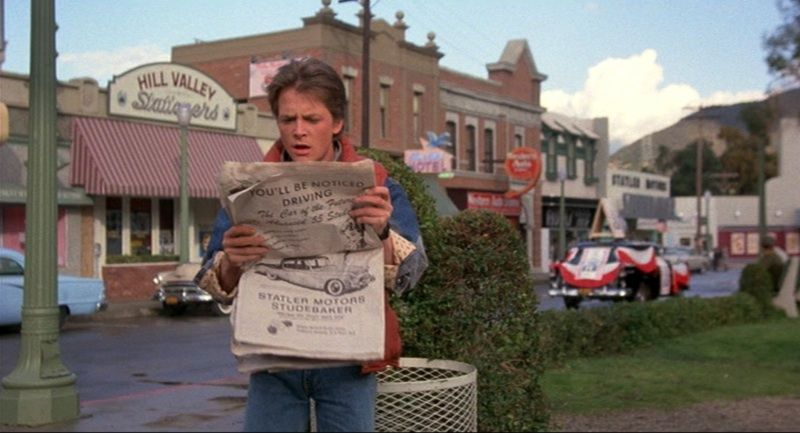
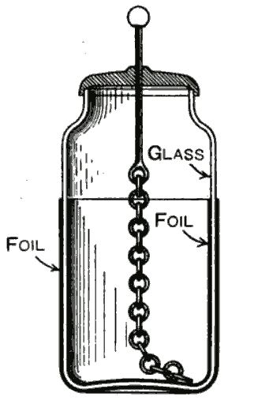
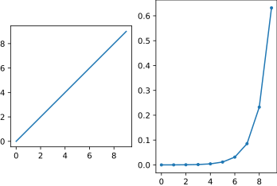
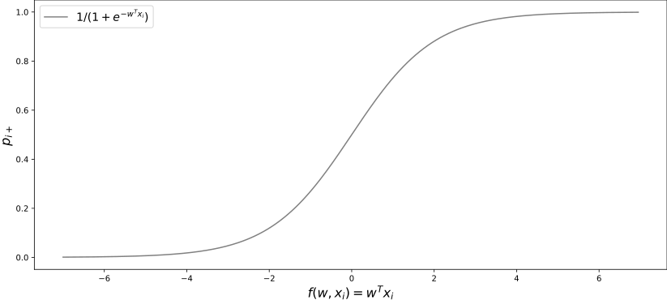

Advanced Machine Learning
11: Logistic Regression
Schedule (you are here )
| # | date | topic | description |
|---|---|---|---|
| 1 | 24-Aug-2026 | Introduction | |
| 2 | 26-Aug-2026 | Foundations of learning | Drop/Add |
| 3 | 31-Aug-2026 | PAC learnability | HW1 |
| 4 | 02-Sep-2026 | Linear learning models | |
| 5 | 07-Sep-2026 | Labor Day Holiday | Holiday |
| 6 | 09-Sep-2026 | Principal Component Analysis | Project ideas |
| 7 | 14-Sep-2026 | Curse of Dimensionality | HW2, HW1 due |
| 8 | 16-Sep-2026 | Bayesian Decision Theory | |
| 9 | 21-Sep-2026 | Parameter estimation: MLE | |
| 10 | 23-Sep-2026 | Parameter estimation: MAP & NB | finalize teams |
| 11 | 28-Sep-2026 | Logistic Regression | HW3, HW2 due |
| 12 | 30-Sep-2026 | Kernel Density Estimation | |
| 13 | 05-Oct-2026 | Support Vector Machines | |
| 14 | 07-Oct-2026 | Matrix Factorization | |
| 15 | 12-Oct-2026 | * Midterm | Exam, HW3 due |
| 16 | 14-Oct-2026 | k-means clustering | |
| 17 | 19-Oct-2026 | Invited: Intro to Causal Learning I |
| # | date | topic | description |
|---|---|---|---|
| 18 | 21-Oct-2026 | Invited: Intro to Causal Learning II | |
| 19 | 26-Oct-2026 | * Mid-point projects checkpoint | HW4, P |
| 20 | 28-Oct-2026 | Expectation Maximization | |
| 21 | 02-Nov-2026 | Stochastic Gradient Descent | |
| 22 | 04-Nov-2026 | Automatic Differentiation | |
| 23 | 09-Nov-2026 | Nonlinear embedding approaches | HW5, HW4 due |
| 24 | 11-Nov-2026 | Model comparison | |
| 25 | 16-Nov-2026 | Model Calibration | |
| 26 | 18-Nov-2026 | Convolutional Neural Networks | |
| 27 | 23-Nov-2026 | Thanksgiving Break | Holiday |
| 28 | 25-Nov-2026 | Thanksgiving Break | Holiday |
| 29 | 30-Nov-2026 | Word Embedding | |
| 30 | 02-Dec-2026 | Project Final Presentations | HW5 due, P |
| 31 | 07-Dec-2026 | Presentation spillover / Exam prep | Classes End |
| 32 | 09-Dec-2026 | * Final Exam | Exam |
| 33 | 16-Dec-2026 | Project Reports | due |
| 34 | 17-Dec-2026 | Grades due 5 p.m. | PAWS |
Outline of this lecture
- Naïve Bayes recap & The GNB Bridge
- Defining Logistic Regression & Geometry
- Solving Logistic Regression (MLE & IRLS)
- Take Home Points
Naïve Bayes (recap)
Properties and assumptions
Features $X_i$ and $X_j$ are conditionally independent given the class label $Y$
$\prob{P}{X_i,X_j|Y} = \prob{P}{X_i|Y}\prob{P}{X_j|Y}$
$\prob{P}{X_1,\dots, X_d|Y} = \prod_{i=1}^d \prob{P}{X_i|Y}$
$f_{NB}(\vec{x}) = \underset{y}{\argmax} \prod_{i=1}^d \prob{P}{x_i|y}\prob{P}{y}$
Assume a parametric form for $\prob{P}{X_j|Y}$ and $\prob{P}{Y}$
Estimate MLE parameters for these functions.
Plug in and operate the NB classifier
Plug in and operate the NB classifier
Gaussian Naïve Bayes
$Y \sim \mbox{Bernoulli}(\pi)$ $\prob{P}{X_i = \vec{x}_i|Y = y_k} = \frac{1}{\sigma_{ik}\sqrt{2\pi}} e^{-\frac{(\vec{x}_i - \mu_{ik})^2}{2\sigma_{ik}^2}}$Different mean and variance for each class $k$ and each pixel $i$.$^*$
Let's assume variance is independent of class: $\sigma_{ik} = \sigma_{i}$
Gaussian NB as a linear classifier
$\prob{P}{X_i = \vec{x}_i|Y = y_k} = \frac{1}{\sigma_{ik}\sqrt{2\pi}} e^{-\frac{(\vec{x}_i - \mu_{ik})^2}{2\sigma_{ik}^2}}$
- For simplicity consider 2 class problem $\sigma_{i,0} = \sigma_{i, 1}$
- Decision boundary:
$\prod_{i=1}^d \prob{P}{x_i|y=0}\prob{P}{y=0} = \prod_{i=1}^d \prob{P}{x_i|y=1}\prob{P}{y=1}$
- Equivalently:
$\log\frac{\prod_{i=1}^d \prob{P}{x_i|y=0}\prob{P}{y=0}}{\prod_{i=1}^d \prob{P}{x_i|y=1}\prob{P}{y=1}} = 0$ $\log\frac{\prod_{i=1}^d \prob{P}{x_i|y=0}\prob{P}{y=0}}{\prod_{i=1}^d \prob{P}{x_i|y=1}\prob{P}{y=1}}= \log\frac{1 - \pi}{\pi} +\sum_{i=1}^d \log\frac{\prob{P}{x_i|y=0}}{\prob{P}{x_i|y=1}}$
Gaussian NB as a linear classifier
- Decision boundary:
$\log\frac{\prod_{i=1}^d \prob{P}{x_i|y=0}\prob{P}{y=0}}{\prod_{i=1}^d \prob{P}{x_i|y=1}\prob{P}{y=1}} = 0$ $\log\frac{\prod_{i=1}^d \prob{P}{x_i|y=0}\prob{P}{y=0}}{\prod_{i=1}^d \prob{P}{x_i|y=1}\prob{P}{y=1}}= \log\frac{1 - \pi}{\pi} +\sum_{i=1}^d \log\frac{\prob{P}{x_i|y=0}}{\prob{P}{x_i|y=1}}$
- If you do the algebra:
$\log\frac{1 - \pi}{\pi} +\sum_{i=1}^d \frac{\mu^2_{i,1} - \mu^2_{i,0}}{2\sigma_i^2} + \sum_{i=1}^d \frac{\mu_{i,1} - \mu_{i,0}}{\sigma_i^2} x_i = w_0 + \sum_{i=1}^d w_i x_i$
Gaussian NB implies Logistic Sigmoid!
- From previous slide, the log-odds ratio is linear:
$\log\frac{\prob{P}{Y=1|\vec{x}}}{\prob{P}{Y=0|\vec{x}}} = w_0 + \sum_{i=1}^d w_i x_i = w_0 + \vec{w}^T\vec{x}$
- Invert to solve for the posterior $\prob{P}{Y=1|\vec{x}}$:
$\prob{P}{Y=1|\vec{x}} = \frac{1}{1 + \exp(-(w_0 + \vec{w}^T\vec{x}))} = \sigma(w_0 + \vec{w}^T\vec{x})$
-
Same functional form! But GNB assumes conditional independence & normality, whereas Logistic Regression learns $\vec{w}$ directly.
GNB vs. Logistic Regression
Generative (Diagonal Covariance) vs. Discriminative (Direct Boundary)
True Density
GNB Model
GNB: --
LR: --
Presets:
0.75
Generative vs. Discriminative
- Generative classifiers (such as Naïve Bayes)
- Assume a functional form for $\prob{P}{x,y}$ (or $\prob{P}{x|y}$ and $\prob{P}{y}$)
- Estimate parameters of $\prob{P}{x|y}$ and $\prob{P}{y}$ from training data
- Able to generate samples from a trained model
- Note:
$\underset{y}{\argmax} \prob{P}{x|y}\prob{P}{y} = \underset{y}{\argmax} \prob{P}{y|x}$
- Let's learn $\prob{P}{y|x}$ directly!
- Or learn the decision boundary directly
Defining Logistic regression
And the winner is...

Example

Problem definition
Logistic regression seeks to- Model the probability of an event occuring depending on the values of the independent variables, which can be categorical or numerical
- Estimate the probability that an event occurs for a randomly selected observation versus the probability that the event does not occur
- Predict the effect of a series of variables on a binary response variable
- Classify observations by estimating the probability that an observation is in a particular category (e.g. approved or not approved for a loan)
Our data in 1D: Why Not Linear Regression?
Bounding Probabilities & Robustness to Outliers
Linear OLS: --
Logistic Reg: --
Scenarios:
7.5
Sir David Cox
Why not SVM?


Odds
| Probability | Corresponding odds |
|---|---|
| 0.5 | 50:50 or 1 |
| 0.9 | 90:10 or 9 |
| 0.999 | 999:1 or 999 |
| 0.01 | 1:99 or 0.0101 |
| 0.001 | 1:999 or 0.001001 |
Log-Odds
| Log-odds | Probability |
|---|---|
| 0 | 0.5 |
| 2.19 | 0.9 |
| 6.9 | 0.999 |
| -4.6 | 0.01 |
| -6.9 | 0.001 |
Linear Fit to Log-Odds
\begin{array}{ll} \log\left(\frac{p_+}{1-p_+}\right) &= kx + b\\ &= w_1 x + w_0 \\ &= \vec{w}^T\vec{x} \\ \end{array}
\begin{array}{ll}
\log\left(\frac{\prob{P}{G=1|X=x}}{\prob{P}{G=K|X=x}}\right) &= \vec{w}_1^T\vec{x}\\
\log\left(\frac{\prob{P}{G=2|X=x}}{\prob{P}{G=K|X=x}}\right) &= \vec{w}_2^T\vec{x}\\
&\vdots \\
\log\left(\frac{\prob{P}{G=K-1|X=x}}{\prob{P}{G=K|X=x}}\right) &= \vec{w}_{K-1}^T\vec{x}\\
\end{array}
What's the probability?
- $\log\left(\frac{p_+}{1-p_+}\right) = \vec{w}^T\vec{x}$
- $\frac{p_+}{1-p_+} = e^{\vec{w}^T\vec{x}}$
- $p_+ = e^{\vec{w}^T\vec{x}}(1-p_+)$
- $p_+ = e^{\vec{w}^T\vec{x}}-p_+e^{\vec{w}^T\vec{x}}$
- $p_++p_+e^{\vec{w}^T\vec{x}} = e^{\vec{w}^T\vec{x}}$
- $p_+(1+e^{\vec{w}^T\vec{x}}) = e^{\vec{w}^T\vec{x}}$
- $p_+ = \frac{e^{\vec{w}^T\vec{x}}}{1+e^{\vec{w}^T\vec{x}}}$
- $p_+ = \frac{1}{1+e^{-\vec{w}^T\vec{x}}}$

Geometry of Logistic Regression
Decision Boundary (Hyperplane in ℝd) vs. Probability Output (Nonlinear Sigmoid Surface)
Boundary: wᵀx + w₀ = 0 | Surface: P(Y=1|x) = σ(wᵀx + w₀)
Level Set P=0.5: Hyperplane | Surface: Sigmoid Ramp
Presets:
What's the probability when it is interesting?
- $\prob{P}{G=k|X=x} = \frac{e^{\vec{w}_k^T\vec{x}}}{1+\sum_i^{K-1}e^{\vec{w}_i^T\vec{x}}}, k = 1, \dots, K-1$
- $\prob{P}{G=K|X=x} = \frac{1}{1+\sum_i^{K-1}e^{\vec{w}_i^T\vec{x}}}$
Softmax!
\[ \sigma(\mathbf{z})_i = \frac{e^{z_i}}{\sum_{j=1}^K e^{z_j}} \]
Interactive Softmax & Temperature
$\sigma(\mathbf{z})_i = \frac{e^{z_i / T}}{\sum_{j=1}^K e^{z_j / T}}$ — Multi-Sample Segmentation & Temperature Filtering
Sample: Sample 1 (#720)
Temp T: 1.00
Peak: #720
Max P: --
Entropy: --
Samples:
Solving Logistic regression
An alternative perspective on log odds
What's posterior probability of class $c_1$ given a sample $\vec{x}$?
\[
\prob{p}{c_1|\vec{x}} = \frac{\prob{p}{\vec{x}|c_1}\prob{p}{c_1}}{\prob{p}{\vec{x}|c_1}\prob{p}{c_1} + \prob{p}{\vec{x}|c_2}\prob{p}{c_2}}
\]
Let's introduce $a = \ln\frac{\prob{p}{\vec{x}|c_1}\prob{p}{c_1}}{\prob{p}{\vec{x}|c_2}\prob{p}{c_2}}$
\[
\prob{p}{c_1|\vec{x}} = \frac{1}{1+\exp{(-a)}} = \sigma(a)
\]
Logistic Sigmoid

Nice properties of logistic sigmoid|
\begin{align} \sigma{(-a)} &= 1 - \sigma{(a)}\\ \end{align} $a = \ln{(\frac{\sigma}{1 - \sigma})} \color{#dc322f}{\text{ log odds???}}$
$\frac{d\sigma}{d a} =\sigma(1-\sigma)$
Maximum likelihood estimate
\begin{align} {\cal l}(\vec{w}) &= \underset{\vec{w}}{\argmax} \prod_i^N P_{\vec{w}}(c_k | x_i)\\ {\cal l}(\vec{w}) &= \underset{\vec{w}}{\argmax} \prod_{i:\vec{x}_i \in c_1}^N P_{\vec{w}}(c_1 | x_i)\prod_{i:\vec{x}_i \in c_2}^N P_{\vec{w}}(c_2 | x_i)\\ {\cal l}(\vec{w}) &= \underset{\vec{w}}{\argmax} \prod_{i:\vec{x}_i \in c_1}^N \sigma \prod_{i:\vec{x}_i \in c_2}^N (1 - \sigma)\\ {\cal l}(\vec{w}) &= \underset{\vec{w}}{\argmax} \prod_i^N \sigma_i^{l_1}(1 - \sigma_i)^{1-l_1}\\ \end{align}Negative Log likelihood
\begin{align} {\cal l}(\vec{w}) &= \underset{\vec{w}}{\argmax} \prod_i^N \sigma_i^{l_1}(1 - \sigma_i)^{1-l_1}\\ \ell(\vec{w}) &= - \sum_i^N ({l_i}\ln(\sigma_i) + (1-l_i)\ln(1 - \sigma_i))\\ \end{align}Cross Entropy (recap)
\[ H_{p,q} = -\sum_{i=1}^n p_X(x_i) \log q_X(x_i) \]
Negative Log likelihood: How to solve for $\vec{w}$?
\begin{align} \ell(\vec{w}) &= - \sum_i^N ({l_i}\ln(\sigma_i) + (1-l_i)\ln(1 - \sigma_i))\\ \nabla_{\vec{w}} \ell &= \sum_i^N (\sigma_i - l_i)\vec{x}_i\\ \nabla_{\vec{w}} \ell &= {\bf X}^T (\vec{\sigma} - \vec{l}) \stackrel{\text{set}}{=} 0\\ \end{align}Taylor expansion
\[ f(x) = f(a)+\frac {f^\prime(a)}{1!} (x-a)+ \frac{f''(a)}{2!} (x-a)^2+ \cdots \] \[ f(x) = \sum_{n=0} ^ {\infty} \frac {f^{(n)}(a)}{n!} (x-a)^{n} \]Interactive Taylor Expansion
From Tangent Slopes (Gradient Descent) to Osculating Parabolas (Newton-Raphson)
T₂(x) = f(a) + f'(a)(x-a) + ½ f''(a)(x-a)²
Function:
Order n:
0.50
Newton-Raphson method
\begin{align} \ell(\vec{w} + \Delta) & = \ell(\vec{w}) + \ell^{\prime}(\vec{w})\Delta + \frac{1}{2}\ell^{\prime\prime}(\vec{w})\Delta^2\\ \frac{\partial \ell(\vec{w} + \Delta)}{\partial \Delta} & \stackrel{set}{=} 0 \\ \ell^{\prime}(\vec{w}) + \ell^{\prime\prime}(\vec{w})\Delta &= 0\\ \Delta &= - \frac{\ell^{\prime}(\vec{w})}{\ell^{\prime\prime}(\vec{w})}\\ \vec{w}_{new} & = \vec{w}_{old} + \Delta = \vec{w}_{old}- \frac{\ell^{\prime}(\vec{w})}{\ell^{\prime\prime}(\vec{w})}\\ \vec{w}_{new} & = \vec{w}_{old} - {\bf H}^{-1}\nabla_\vec{w}\ell \end{align}Hessian
\[ \mathbf H = \begin{bmatrix} \dfrac{\partial^2 f}{\partial w_1^2} & \dfrac{\partial^2 f}{\partial w_1\,\partial w_2} & \cdots & \dfrac{\partial^2 f}{\partial w_1\,\partial w_n} \\[2.2ex] \dfrac{\partial^2 f}{\partial w_2\,\partial w_1} & \dfrac{\partial^2 f}{\partial w_2^2} & \cdots & \dfrac{\partial^2 f}{\partial w_2\,\partial w_n} \\[2.2ex] \vdots & \vdots & \ddots & \vdots \\[2.2ex] \dfrac{\partial^2 f}{\partial w_n\,\partial w_1} & \dfrac{\partial^2 f}{\partial w_n\,\partial w_2} & \cdots & \dfrac{\partial^2 f}{\partial w_n^2} \end{bmatrix} \]Newton-Raphson update for linear regression
$f(\vec{w}) = \sum_{i}^{n} (\vec{w}^T\vec{x}_i - y_i)^2$
Let us write in matrix form:
$f(\vec{w}) = (\bf{X}\vec{w} - \vec{y})^T(\bf{X}\vec{w} - \vec{y})$
$f(\vec{w}) = (\bf{X}\vec{w} - \vec{y})^T(\bf{X}\vec{w} - \vec{y})$
The gradient:
$\nabla_\vec{w}f = \bf{X}^T\bf{X}\vec{w} - \bf{X}^T\vec{y}$
$\nabla_\vec{w}f = \bf{X}^T\bf{X}\vec{w} - \bf{X}^T\vec{y}$
The Hessian:
$\nabla^2_\vec{w}f = \bf{X}^T\bf{X}$
$\nabla^2_\vec{w}f = \bf{X}^T\bf{X}$
$\vec{w}_{new} = \vec{w}_{old} - (\bf{X}^T\bf{X})^{-1}(\bf{X}^T\bf{X}\vec{w}_{old} - \bf{X}^T\vec{y})$
$\vec{w}_{new} = \vec{w}_{old} - \vec{w}_{old} + (\bf{X}^T\bf{X})^{-1}\bf{X}^T\vec{y}$
$\vec{w}_{new} = (\bf{X}^T\bf{X})^{-1}\bf{X}^T\vec{y}$
Newton-Raphson update for logistic regression
- $\nabla_{\vec{w}} \ell = {\bf X}^T (\vec{\sigma} - \vec{l})$
- ${\bf H} = \nabla\nabla_{\vec{w}} \ell = {\bf X}^T{\bf W}{\bf X}$
- ${\bf W}_{i,i} = \sigma_i(1-\sigma_i)$
- $\vec{w}_{new} = \vec{w}_{old} - (\bf{X}^T\bf{W}\bf{X})^{-1}\bf{X}^T(\vec{\sigma} - \vec{l})$
- bring $(\bf{X}^T\bf{W}\bf{X})^{-1}$ out
- $\vec{w}_{new} = (\bf{X}^T\bf{W}\bf{X})^{-1}(\bf{X}^T\bf{W}\bf{X}\vec{w}_{old} - \bf{X}^T(\vec{\sigma} - \vec{l}))$
- $\vec{z} = \bf{X}\vec{w}_{old} - \bf{W}^{-1}(\vec{\sigma} - \vec{l})$
- $\vec{w}_{new} = (\bf{X}^T\bf{W}\bf{X})^{-1}\bf{X}^T\bf{W}\vec{z}$
Take Home Points
- Generative vs. Discriminative Bridge: Gaussian NB with equal class variance implies the logistic sigmoid $P(Y=1|X) = \sigma(\vec{w}^T\vec{x})$; Logistic Regression retains this form while dropping normality and feature independence assumptions.
- Linear Classifier, Nonlinear Probability Surface: The decision boundary $\vec{w}^T\vec{x} + w_0 = 0$ is strictly a flat linear hyperplane in feature space $\mathbb{R}^d$, while the predicted posterior $P(Y=1|\vec{x}) = \sigma(\vec{w}^T\vec{x} + w_0)$ is a bounded nonlinear sigmoidal surface.
- Convexity & Cross-Entropy: Logistic negative log-likelihood is strictly convex with no local minima; its gradient $\mathbf{X}^T(\vec{\sigma} - \vec{y})$ reflects prediction errors weighted by inputs.
- Second-Order Optimization (IRLS): Newton-Raphson approximates the loss via its 2nd-order Taylor expansion; the update $\vec{w}_{\text{new}} = (\mathbf{X}^T\mathbf{W}\mathbf{X})^{-1}\mathbf{X}^T\mathbf{W}\vec{z}$ solves iteratively reweighted least squares with Hessian curvature $\mathbf{X}^T\mathbf{W}\mathbf{X}$.
- Multiclass Softmax & Temperature: Softmax generalizes logistic regression to $K$ classes; temperature scaling smoothly interpolates between uniform distribution ($T \to \infty$) and hard argmax ($T \to 0$).